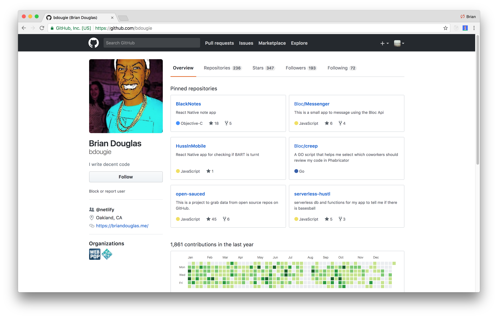

Testing in JavaScript
Brian Douglas
Links
github/bdougie
Overview
- Types of Testing
- Examples
- write a test or two
Expectation
- You should have a basic understanding of JavaScript
- Please particpate by answering my questions 😺
how confident are you with testing?
Things to consider
- Tests should be reliable.
- Tests should be easy to write.
- Tests should be easy to understand.
Types of testing
Types of testing

Unit Test Example
import test from 'tape';
import hello from 'store/reducers/hello';
test('...initial', assert => {
const message = `should set { mode: 'display', subject: 'world' }`;
const expected = {
mode: 'display',
subject: 'World'
};
const actual = hello();
assert.deepEqual(actual, expected, message);
assert.end();
});
Integration Test Example
// import test from 'tape';
import createLog from 'shared/logger';
import routeRoute from 'routes/my-route';
test('logger/route integration', assert => {
const msg = 'Logger logs router calls to memory';
const logMsg = 'hello';
const url = `http://127.0.0.1/msg/${ logMsg }`;
const logger = createLog({ output: 'memory' });
const routeHandler = createRoute({ logger });
routeHandler({ url });
const actual = logger.memoryLog[0];
const expected = logMsg;
assert.equal(actual, expected, msg);
assert.end();
});
Acceptance Test Example
module.exports = {
'Demo test Google' : function (browser) {
browser
.url('http://www.google.com')
.waitForElementVisible('body', 1000)
.setValue('input[type=text]', 'nightwatch')
.waitForElementVisible('button[name=btnG]', 1000)
.click('button[name=btnG]')
.pause(1000)
.assert.containsText('#main', 'Night Watch')
.end();
}
};
Testing Setup
describe("Solution", function(){
it("should test for something", function(){
Test.assertEquals("actual", "expected", "This is just an example of how you can write your own TDD tests");
});
});
The Problem
Test Custom FizzBuzz
fizzBuzzCustom()[15] // returns 16
fizzBuzzCustom()[44] // returns "FizzBuzz" (45 is divisible by 3 and 5)
fizzBuzzCustom('Hey', 'There')[25] // returns 26
fizzBuzzCustom('Hey', 'There')[11] // returns "Hey" (12 is divisible by 3)
fizzBuzzCustom("What's ", "up?", 3, 7)[80] // returns "What's " (81 is divisible by 3)
{kind=link}